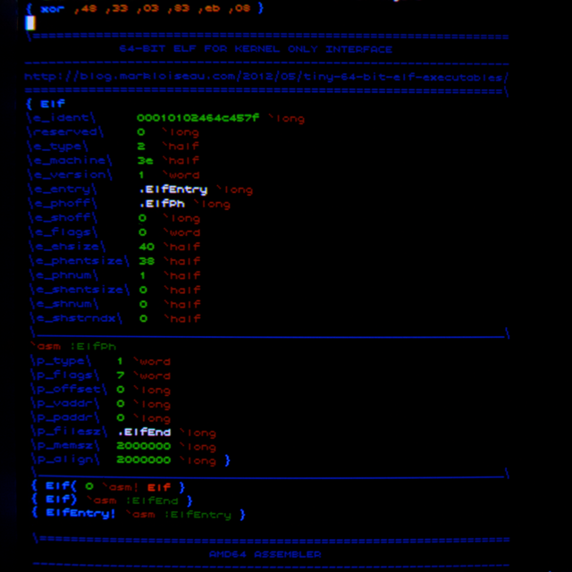
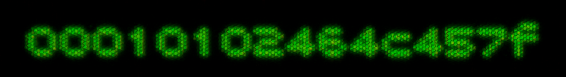

20140816 - Vintage Programming
A photo (not a screenshot) of one of my home vintage development environments running on modern fast PCs. Shot shows colored syntax highlighted source to the compiler of the language I use most often (specifically the part which generates the ELF header for Linux). More on this below.

This is running 640x480 on a small mid 90's VGA CRT which supports around 1000 lines. So no garbage double scan and no horrible squares for pixels. Instead a high quality analog display running at 85 Hz. The font is my 6x11 fixed size programming font.

This specific compiler binary on x86-64 Linux is under 1700 bytes.
A Language
The language is ultra primitive, it does not include a linker, or anything to do code generation, there is no debugger (and it frankly is not needed as debuggers are slower than instant run-time recompile/reload style development). Instead the ELF (or platform) header for the binary, and the assembler or secondary language which actually describes the program, is written in the language itself.
Over the years I've been playing with either languages which are in classic text form, and languages which require custom editors and are in a binary form. This A language is the classic text source form. All the variations of languages I've been interested in are heavily influenced by
Color Forth.
This A compiler works in 2 passes, the first both parses and translates the source into x86-64 machine code. Think of this as factoring out the interpreter into the parser. The second pass simply calls the entry point of the source code to interpret the source (by running the existing generated machine code). After that whatever is written in the output buffer gets saved to a file.
Below is the syntax for the A language. A symbol is an untyped 64-bit value in memory. Like Forth there is a separate data and return stack.
\comment\
012345- \compile: push -0x12345 on the data stack\
,c3 \write a literal byte into the compile stream\
symbol \compile: call to symbol, symbol value is a pointer to function\
'symbol \compile: pop top of data stack, if value is true, call symbol\
`symbol \copy the symbol data into the compile stream, symbol is {32-bit pointer, 32-bit size}\
:symbol \compile: pop data stack into symbol value\
.symbol \compile: push symbol value onto data stack\
%symbol \compile: push address of symbol value onto data stack\
"string" \compile: push address of string, then push size of string on the data stack\
{ symbol ... } \define a function, symbol value set to head of compile stream\
And that is the A language. The closing "}" writes out the 32-bit size to the packed {32-bit pointer, 32-bit size} symbol value, and also adds an extra RET opcode to avoid needing to add one at the end of every define. There is one other convention missing in the above description, there is a hidden register used for the pointer to the output buffer.
Writing Parts of the Language in the Language
The first part of any source file is a collection of opcodes, like the
{ xor ,48 ... } at the top of the image which is the raw x86-64 machine code to do the following in traditional assembly language (rax = top of data stack, rbx points to second data stack entry),
XOR rax, [rbx]
SUB rbx, 8
These collection of opcodes generate symbols which form the stack based language the interpreter uses. They would get used like
`xor in the code (the copy symbol to compile stream syntax). For instance
`long pops the top of the data stack and writes out 8-bytes to the output buffer, and
`asm pushes the output buffer pointer onto the data stack.
I use this stack based language to then define an assembler (in the source code), and then I write code in the assembler using the stack based language as effectively the ultimate macro language. For instance if I was to describe the
`xor command in the assembly it would look like follows,
{ xor .top .stk$ 0 X@^ .stk$ 8 #- }
Which is really hard to read without syntax coloring (sorry my HTML is lazy). For naming, the "X" = 64-bit extended, the "@" = load, and the "#" = immediate. So the "X@^" means assemble "XOR reg,[mem+imm]". The symbols "top" and "stk$" contain the numbers of the registers for the top of the stack and the pointer to the second item on the stack respectively.
Compiler Parser
The compiler parsing pass is quite easy, just a character jump table based on prefix character to a function which parses the {symbol, number, comment, white space, etc}. These functions don't return, they simply jump to the next thing to parse. As symbol strings are read they are hashed into a register and bit packed into two extra 64-bit registers (lower 4-bits/character in one register, upper 3-bits/character in another register). This packing makes string compare easy later when probing. Max symbol string is 16 characters. Hash table is a simple linear probing style, but with an array 2 of entries per hash value filling one cacheline. Each hash table entry has the following 8-byte values {lower bits of string, upper bits of string, pointer to symbol storage, unused}. The symbol storage is allocated from another stack (which only grows). Upon lookup, if a symbol isn't in the hash table it is added with new storage. Symbols never get deleted.